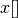
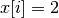
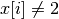
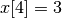

5.3. Basic working of the solver: the search algorithm
Basically, the CP solver consists of three main components:
- the main search algorithm that permits to traverse/construct the search tree and to call the callbacks at the right moments;
- the Trail that is responsible for reversibility (when backtracking, you have to restore the previous states) and
- the Queue where the propagation takes place thanks to the Demons.
In this section, we only discuss the main search algorithm.
We present a simplified version of the main search algorithm. Although far from being complete, it gathers all the necessary basic elements and allows you to understand when some of the callbacks of the SearchMonitors are called.
Warning
We describe a simplified version of the main search algorithm.
The real implementation is more complex (and a little bit different!) and deals with other cases not mentioned here (especially nested searches and restarting the search).
For the juicy details, we refer the reader to the chapter Under the hood or the source code itself.
5.3.1. Basic definitions
Let’s agree on some wording we will use throughout this chapter and the rest of the manual.
5.3.1.1. Search trees
A search tree represents the search space that the search algorithm will, implicitly or explicitly,
traverse or explore. Each node of the tree corresponds to a state of the search. Take an array of variables 
and a valid index  .
.
At one node in the search tree, we divide the search space in two exclusive search subspaces by imposing  at one branch and  at another branch like in the Figure The search space is divided in two search sub-trees.
The search space is divided in two search sub-trees
Each subspace is now smaller and we hope easier to solve. We continue this divide and conquer mechanism until we know that a subspace doesn’t contain a feasible solution or if we find all feasible solutions of a subtree. The first node is called the root node and represent the complete search space.
When we divide the search space by applying a decision () in one branch and by refuting this decision () in another, we obtain a binary search trees[1]. This way of dividing the search tree in two is basically the algorithm used by the CP solver to explore a search tree.
| [1] | Not to be confused with a binary search tree (BST) used to store ordered sets. |
The divide mechanism can be more complex. For instance by dividing a subspace in more than two subspaces. The subspaces don’t need to be mutually exclusive, you can have different numbers of them at each node, etc.
What exactly is a search tree?
A search tree is more a concept than a real object. It is made of nodes but these nodes don’t have to exist and can be (and most of them will be) virtual. Sometimes we use the term search tree to denote the whole search space, sometimes to denote only the visited nodes during a search or a part of the search space depending on the context.
5.3.1.2. Callbacks
To customize the search, we use callbacks. A callback is a reference to a piece of executable code (like a function or an object) that is passed as an argument to another code. This is a very common and handy way to pass high level code to low level code. For example, the search algorithm is low level code. You don’t want to change this code but you would like to change the behaviour of the search algorithm to your liking. How do you do this? Callbacks are to the rescue! At some places in the low level code, some functions are called and you can redefine those functions. There are several techniques available. In this section, we redefine some virtual functions of an abstract class. In section XXX, we will see another similar mechanism.
An example will clarify this mechanism. Take a SearchMonitor class. If you want to implement your own search monitor, you inherit from SearchMonitor and you redefine the methods you need:
class MySearchMonitor: public SearchMonitor {
...
void EnterSearch() {
LG << "Search entered...";
}
...
};
You then pass this SearchMonitor to the solver:
Solver solver("Test my new SearchMonitor");
MySearchMonitor* const sm = new MySearchMonitor(&solver);
DecisionBuilder* const db = ...;
solver.NewSearch(db, sm);
delete sm;
At the beginning of a search, the solver calls the virtual method EnterSearch() i.e. your EnterSearch() method. Don’t forget to delete your SearchMonitor after use. You can also use a smart pointer or even better, let the solver take ownership of the object with the RevAlloc() method (see the subsection RevAlloc).
5.3.1.3. Phases
The CP solver allows you to combine several searches, i.e. different types of sub-searches. You can search a subtree of the search tree differently from the rest of your search. This is called nested search while the whole search is called a top-level search. There are no limitations and you can nest as many searches as you like. You can also restart a (top level or nested) search. In or-tools, each time you use a new DecisionBuilder, we say you are in a new phase. This is where the name MakePhase comes from.
5.3.2. The basic idea
The basic idea[2] is very simple yet effective.
A DecisionBuilder is responsible to return a Decision at a node. A decision would be for instance, .
We divide the sub search
tree at this node by applying this decision (left branch: ) and by refuting this decision (right branch:
![x[4] \neq 3](../../_images/math/b2e14bcc31f47e204432c15290cbf9fdbfbaa0b5.png) ).
).
At the current node, the DecisionBuilder of the current search returns a Decision. The Decision class basically tells the solver what to do going left (Apply()) or right (Refute()) as illustrated on the next figure.
Apply(): go left, Refute(): go right.
From the root node, we follow the left branch whenever possible and backtrack to the first available right branch when needed. When you see a search tree produced by the CP solver, you can easily track the search by following a preorder traversal (see the box What is a pre-order traversal of a binary tree?) of the binary search tree.
| [2] | The real code deals with a lots of subtleties to implement different variants of the search algorithm. |
What is a pre-order traversal of a binary tree?
The search tree depicted on the Figure The actual search tree of our search has its node numbered in the order given by a pre-order traversal. There are two other traversals: in-order and post-order. We invite the curious reader to google pre-order traversal of a tree to find more. There are a number of applets showing the different traversals.
There are basically two ways to ask the CP solver to find a solution (or solutions) as we have seen in the chapter First steps with or-tools: cryptarithmetic puzzles.
Either you configure SearchMonitors and you call the Solver‘s Solve() method, either you use the finer grained NewSearch() - NextSolution() - EndSearch() mechanism. In the first case, you are not allowed to interfere with the search process while in the second case you can act every time a solution is found. Solve() is implemented with this second mechanism:
1 2 3 4 5 6 7 8 9 10 | bool Solver::Solve(DecisionBuilder* const db,
SearchMonitor* const * monitors,
int size) {
NewSearch(db, monitors, size);
searches_.back()->set_created_by_solve(true); // Overwrites default.
NextSolution();
const bool solution_found = searches_.back()->solution_counter() > 0;
EndSearch();
return solution_found;
}
|
searches_ is an std::vector of Searches because we can nest our searches (i.e search differently in a subtree using another phase/DecisionBuilder). Here we take the current search (searches_.back()) and tell the solver that the search was initiated by a Solve() call:
searches_.back()->set_created_by_solve(true); // Overwrites default.
Indeed, the solver needs to know if it let you interfere during the search process or not.
You might wonder why there is only one call to NextSolution()? The reason is simple. If the search was initiated by the caller (you) with the NewSearch() - NextSolution() - EndSearch() mechanism, the solver stops the search after a NextSolution() call. If the search was initiated by a Solve() call, you tell the solver when to stop the search with SearchMonitors. By default, the solver stops after the first solution found (if any). You can overwrite this behaviour by implementing the AtSolution() callback of the SearchMonitor class. If this method returns true, the search continues, otherwise the solver ends it.
5.3.3. The basic search algorithm and the callback hooks for the SearchMonitors
SearchMonitors contain a set of callbacks called on search tree events, such as entering/exiting search, applying/refuting decisions, failing, accepting solutions...
In this section, we present the following callbacks of the SearchMonitor class[3] and show you exactly when they are called in the main search algorithm:
| Methods | Descriptions |
|---|---|
| EnterSearch() | Beginning of the search. |
| ExitSearch() | End of the search. |
| BeginNextDecision(DecisionBuilder* const b) | Before calling DecisionBuilder::Next(). |
| EndNextDecision(DecisionBuilder* const b, Decision* const d) | After calling DecisionBuilder::Next(), along with the returned decision. |
| ApplyDecision(Decision* const d) | Before applying the Decision. |
| RefuteDecision(Decision* const d) | Before refuting the Decision. |
| AfterDecision(Decision* const d, bool apply) | Just after refuting or applying the Decision, apply is true after Apply(). This is called only if the Apply() or Refute() methods have not failed. |
| BeginFail() | Just when the failure occurs. |
| EndFail() | After completing the backtrack. |
| BeginInitialPropagation() | Before the initial propagation. |
| EndInitialPropagation() | After the initial propagation. |
| AcceptSolution() | This method is called when a solution is found. It asserts if the solution is valid. A value of false indicates that the solution should be discarded. |
| AtSolution() | This method is called when a valid solution is found. If the return value is true, then search will resume. If the result is false, then search will stop there. |
| NoMoreSolutions() | When the search tree has been visited. |
| [3] | There are a few more callbacks defined in a SearchMonitor. See XXX. |
We draw again your attention to the fact that the algorithm shown here is a simplified version of the search algorithm. In particular, we don’t show how the nested searches and the restart of a search are implemented. We find this so important that we reuse our warning box:
Warning
We describe a simplified version of the main loop of the search algorithm.
We use exceptions in our simplified version while the actual implementation uses the more efficient (and cryptic) setjmp - longjmp mechanism.
We describe briefly what nested searches are in the section Nested searches but you will have to wait until the chapter Under the hood and the section Nested searches to learn the juicy details[4].
| [4] | Of course, you can have a peak right now but some more background will probably help you understand this mechanism better. Beside, you don’t need to understand the inner mechanism to be able to use nested search! |
To follow the main search algorithm, it is best to know in what states the solver can be. The enum SolverState enumerates the possibilities in the following table:
| Value | Meaning |
|---|---|
| OUTSIDE_SEARCH | Before search, after search. |
| IN_ROOT_NODE | Executing the root node. |
| IN_SEARCH | Executing the search code. |
| AT_SOLUTION | After successful NextSolution() and before EndSearch(). |
| NO_MORE_SOLUTIONS | After failed NextSolution() and before EndSearch(). |
| PROBLEM_INFEASIBLE | After search, the model is infeasible. |
5.3.3.1. NewSearch()
This is how the NewSearch() method might have looked in a simplified version of the main search algorithm. The Search class is used internally to monitor the search. Because the CP solver allows nested searches, we take a pointer to the current search object each time we call the NewSearch(), NextSolution() and EndSearch() methods.
1 2 3 4 5 6 7 8 9 10 11 12 13 14 15 16 17 18 19 20 21 22 23 24 25 26 27 28 29 30 31 32 33 34 35 36 | void Solver::NewSearch(DecisionBuilder* const db,
SearchMonitor* const * monitors,
int size {
Search* const search = searches_.back();
state_ = OUTSIDE_SEARCH;
// Init:
// Install the main propagation monitor
// Install DemonProfiler if needed
// Install customer's SearchMonitors
// Install DecisionBuilder's SearchMonitors
// Install print trace if needed
...
search->EnterSearch(); // SEARCHMONITOR CALLBACK
// Set decision builder.
search->set_decision_builder(db);
state_ = IN_ROOT_NODE;
search->BeginInitialPropagation(); // SEARCHMONITOR CALLBACK
try {
// Initial constraint propagation
ProcessConstraints();
search->EndInitialPropagation(); // SEARCHMONITOR CALLBACK
...
state_ = IN_SEARCH;
} catch (const FailException& e) {
...
state_ = PROBLEM_INFEASIBLE;
}
return;
}
|
The initialization part consists in installing the backtracking and propagation mechanisms, the monitors and the print trace if needed. If everything goes smoothly, the solver is in state IN_SEARCH.
5.3.3.2. NextSolution()
The NextSolution() method returns true if if finds the next solution, false otherwise. Notice that the statistics are not reset whatsoever from one call of NextSolution() to the next one.
We present and discuss this algorithm below. SearchMonitor‘s callbacks are indicated by the comment:
// SEARCHMONITOR CALLBACK
Here is how it might have looked in a simplified version of the main search algorithm:
1 2 3 4 5 6 7 8 9 10 11 12 13 14 15 16 17 18 19 20 21 22 23 24 25 26 27 28 29 30 31 32 33 34 35 36 37 38 39 40 41 42 43 44 45 46 47 48 49 50 51 52 53 54 55 56 57 58 59 60 61 62 63 64 65 66 67 68 69 70 71 72 73 74 75 76 77 78 79 80 81 82 83 84 85 86 87 88 89 90 91 92 93 94 95 96 97 98 99 100 101 102 103 104 105 106 107 108 109 110 111 112 113 114 115 | bool Solver::NextSolution() {
Search* const search = searches_.back();
Decision* fd = NULL;// failed decision
// Take action following solver state
switch (state_) {
case PROBLEM_INFEASIBLE:
return false;
case NO_MORE_SOLUTIONS:
return false;
case AT_SOLUTION: {// We need to backtrack
// SEARCHMONITOR CALLBACK
// BacktrackOneLevel() calls search->EndFail()
if (BacktrackOneLevel(&fd)) {// No more solutions.
search->NoMoreSolutions();// SEARCHMONITOR CALLBACKS
state_ = NO_MORE_SOLUTIONS;
return false;
}
state_ = IN_SEARCH;
break;
}
case OUTSIDE_SEARCH: {
state_ = IN_ROOT_NODE;
search->BeginInitialPropagation();// SEARCHMONITOR CALLBACKS
try {
ProcessConstraints();
search->EndInitialPropagation();// SEARCHMONITOR CALLBACKS
...
state_ = IN_SEARCH;
} catch(const FailException& e) {
...
state_ = PROBLEM_INFEASIBLE;
return false;
}
break;
}
case IN_SEARCH:
break;
}
DecisionBuilder* const db = search->decision_builder();
// MAIN SEARCH LOOP TO FIND THE NEXT SOLUTION IF ANY
volatile bool finish = false;
volatile bool result = false;
while (!finish) {// Try to find next solution
try {
// Explore right branch of the tree on backtrack
if (fd != NULL) {// We have a right branch
...
search->RefuteDecision(fd);// SEARCHMONITOR CALLBACK
fd->Refute(this);
search->AfterDecision(fd, false);// SEARCHMONITOR CALLBACK
...
fd = NULL;
}
// Explore left branches of the tree
Decision* d = NULL;
// Go left as often as possible
while (true) {// Trying to branch left
search->BeginNextDecision(db);// SEARCHMONITOR CALLBACK
d = db->Next(this);
search->EndNextDecision(db, d);// SEARCHMONITOR CALLBACK
// Dead-end? This is a shortcut
if (d == fail_decision_) {
search->BeginFail();// SEARCHMONITOR CALLBACK
// fail now instead of after 2 branches.
throw FailException();
}
// Explore next left branch of the tree
if (d != NULL) {
search->ApplyDecision(d);// SEARCHMONITOR CALLBACK
d->Apply(this);
search->AfterDecision(d, true);// SEARCHMONITOR CALLBACK
...
} else {// No Decision left, the DecisionBuilder has finished
break;
}
}// while (true)
// We can not go further left... test Solution
// SEARCHMONITOR CALLBACK
if (search->AcceptSolution()) {// Accept Solution
// SEARCHMONITOR CALLBACK
if (!search->AtSolution() || !CurrentlyInSolve()) {
result = true;
finish = true;
} else {
search->BeginFail();// SEARCHMONITOR CALLBACK
throw FailException();
}
} else {
search->BeginFail();// SEARCHMONITOR CALLBACK
throw FailException();
}
} catch (const FailException& e) {
// We must backtrack
// SEARCHMONITOR CALLBACK
// BacktrackOneLevel() calls search->EndFail()
if (BacktrackOneLevel(&fd)) { // no more solutions.
search->NoMoreSolutions();// SEARCHMONITOR CALLBACK
result = false;
finish = true;
}
}
}// while (!finish)
// Set solver current state
...
state_ = ...;
return result;
}
|
Let’s dissect the algorithm. First of all, you might wonder where does the propagation take place? In a few words: Constraints are responsible of attaching Demons to variables. These Demons are on their turn responsible for implementing the actual propagation. Whenever the domain of a variable changes, the corresponding Demons are triggered. In the main search algorithm, this happens twice: when we Apply() a Decision (line 75) and when we Refute() a Decision (line 53).
Back to the algorithm. On line 2, the solver grabs the last search. Indeed, several searches can be nested and queued.
The Search object is responsible of monitoring the search for one DecisionBuilder (one phase) and triggers the callbacks of the installed SearchMonitors at the right moments.
Following the solver’s state, some action is needed (see lines 6-39). The case AT_SOLUTION is worth an explanation. NextSolution() was called and the solver found a feasible solution. The solver thus needs to backtrack (method BacktrackOneLevel() on line 14). If a right branch exists, it is stored in the Decision pointer fd (failed decision) and BacktrackOneLevel() returns false. If there are no more right branches to visit, the search tree has been exhausted and the method returns true. Next, the corresponding DecisionBuilder to the current search is kept on line 41.
We are now inside the main loop of the NextSolution() method. Two Boolean variables are defined[5]
- finish: becomes true when the search is over;
- result: denotes if a feasible solution was indeed found or not.
These two variables are declared volatile to allow their use between setjmp and longjmp, otherwise the compiler might optimize certain portions of code away. Basically, it tells the compiler that these variables can be changed from the outside.
| [5] | These two variables play a role when we use nested searches, restart or finish a search but these possibilities are not shown here. |
This main loop starts at line 47 and ends at line 108.
The try - catch mechanism allows to easily explain the backtrack mechanism. Whenever we need to backtrack in the search, a FailException is thrown[6].
| [6] | Did we already mention that the try - catch mechanism is not used in the production code? ;-) |
If the Decision pointer fd is not NULL, this means that we have backtracked to the first available (non visited) right branch in the search tree. This corresponds to refuting the decision (lines 50-57).
The solver now tries to explore as much as possible left branches and this is done in the while loop (line 62-81).
The DecisionBuilder produces its next Decision on line 64. If it detects that this branch is a dead-end, it is allowed to return a FailDecision which the solver tests at line 67.
If the search tree is empty, the DecisionBuilder returns NULL. The solver tests this possibility on line 73. If the DecisionBuilder found a next Decision, it is applied on line 75.
Whenever the solver cannot find a next left branch to explore, it exits the while(true) loop.
We are now ready to test if we have found a feasible solution at the leaf of a left branch. This test is done one line 85. The method AcceptSolution() decides if the solution is feasible or not. After finding a feasible solution, the method AtSolution() decides if we continue or stop the search.
You might recognize these two methods as callbacks of a SearchMonitor. These two methods call the corresponding methods of all installed SearchMonitors no matter what they return, i.e. you are guaranteed that all SearchMonitors will be called. If one SearchMonitor has its method AcceptSolution() returning false, search->AcceptSolution() returns false. On the contrary, if only one SearchMonitor has its AtSolution() method returning true, search->AtSolution() returns true.
The test on line 87 is a little bit complex:
test = !search->AtSolution() || !CurrentlyInSolve()
Remember that AtSolution() returns true if we want to resume the search (i.e. if at least one SearchMonitor->AtSolution() returns true), false otherwise. CurrentlyInSolve() returns true if the solve process was called with the Solve() method and false if it was called with the NextSolution() method.
Thus, test is true (and we stop the search in NextSolution()) if all SearchMonitors decided to stop the search (search->AtSolution() returns then false) or if at least one SearchMonitor decided to continue but the solve process was called by NextSolution(). Indeed, a user expects NextSolution() to stop whenever it encounters a feasible solution.
Whenever a backtrack is necessary, a FailException is caught and the solver backtracks to the next available right branch if possible.
Finally, the current state of the solver is set and the method NextSolution() returns if a solution has been found and accepted by all SearchMonitors or there is no solution anymore. It then returns true if the test above is true, false otherwise.
Warning
A solution is defined as a leaf of the search tree with respect to the given DecisionBuilder for which there is no failure. What this means is that, contrary to intuition, a solution may not have all variables of the model bound. It is the responsibility of the DecisionBuilder to keep returning decisions until all variables are indeed bound. The most extreme counterexample is calling Solve() with a trivial DecisionBuilder whose Next() method always returns NULL. In this case, Solve() immediately returns true, since not assigning any variable to any value is a solution, unless the root node propagation discovers that the model is infeasible.
5.3.3.3. EndSearch()
The EndSearch() method cleans the solver and if required, writes the profile of the search in a file. It also calls the ExitSearch() callbacks of all installed SearchMonitors.
Here is how it might have looked in a simplified version of the main search algorithm.
1 2 3 4 5 6 7 8 9 10 11 | void Solver::EndSearch() {
Search* const search = searches_.back();
...
search->ExitSearch();// SEARCHMONITOR CALLBACK
search->Clear();
state_ = OUTSIDE_SEARCH;
if (!FLAGS_cp_profile_file.empty()) {
LOG(INFO) << "Exporting profile to " << FLAGS_cp_profile_file;
ExportProfilingOverview(FLAGS_cp_profile_file);
}
}
|
Google or-tools |
User's Manual
Google search
Welcome
Tutorial examples
Current chapter
5. Defining search primitives: the n-queens problem
Previous section
5.2. Implementation of the basic model
Next section
5.4. cpviz: how to visualize the search